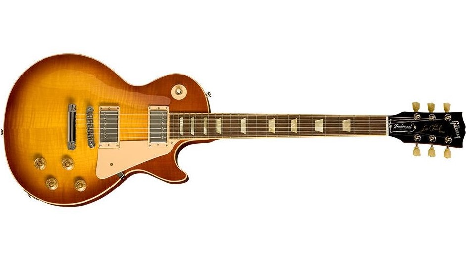
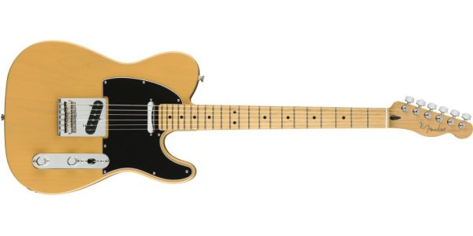

Gibson Les Paul
Modelo "Les Paul" creado por la empresa Gibson en el año 1952.

Conocida por su fuerte tono, sustain y construcción sólida. Tiene dos pastillas humbucker que producen un sonido más profundo y cálido que una guitarra con pastillas single coil. Cuenta con una brazo de cuello ancho y su caracteristico puente Tune-o-matic.
Fender Telecaster
Modelo "Telecaster" creado por la empresa Fender en el año 1951.

Se caracteriza por la simplicidad en su diseño y por el sonido "twangy" que se obtiene de sus dos pastillas de bobinado simple o single coil. Dicho sonido es tan versatil que se considera adecuado para tocar desde jazz hasta hard rock.
Fender Stratocaster
Modelo "Stratocaster" creado por la empresa Fender en el año 1954.

Tiene tres pastillas que le permiten una variedad de tonos y configuraciones. Estas pastillas se pueden combinar con una variedad de controles de volumen, tono y selector de pastillas para dar aún más opciones de tono y configuración. Esta versatilidad y facilidad de configuración hace que la Stratocaster sea una buena opción para principiantes y profesionales.